Source: x0 ~ N(0, I) in 2D. Target: a noisy ring: θ ~ U[0, 2π), r ~ N(1.0, 0.072), point = (r cos θ, r sin θ). The data coordinates therefore lie in about [-1.2, 1.2]2, while the source extends to about ±3. Training pairs are made by pairing a source point with a random, independent target point, drawing t ~ U(0,1), and forming
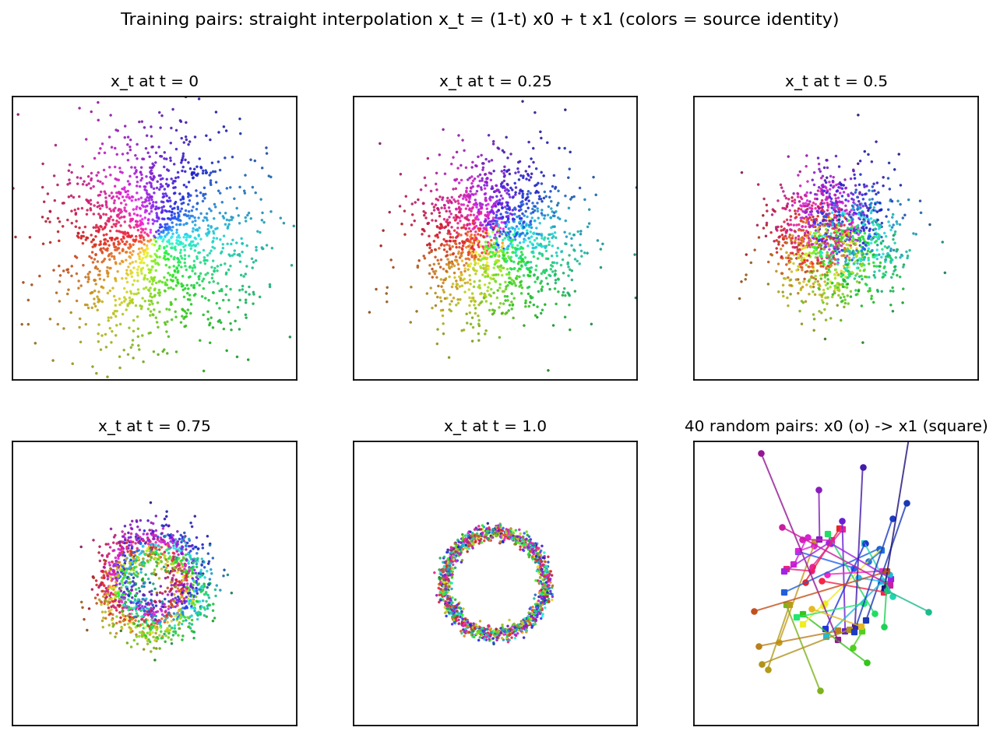
Why the velocity is constant along a training path. For a fixed pair, xt is a linear function of t, so d xt/dt = x1 − x0, which does not depend on t: the point moves along a straight line at constant velocity, and the regression target u is the same at every time on that path. I checked this numerically with finite differences along 200 paths: the largest deviation from x1 − x0 was 2.6e-06 (float32 rounding).
The network vθ(xt, t) ∈ R2 takes the current point and time and is trained on L = E‖vθ(xt, t) − (x1 − x0)‖2 (PyTorch, Adam, 30,000 steps, 56 s).
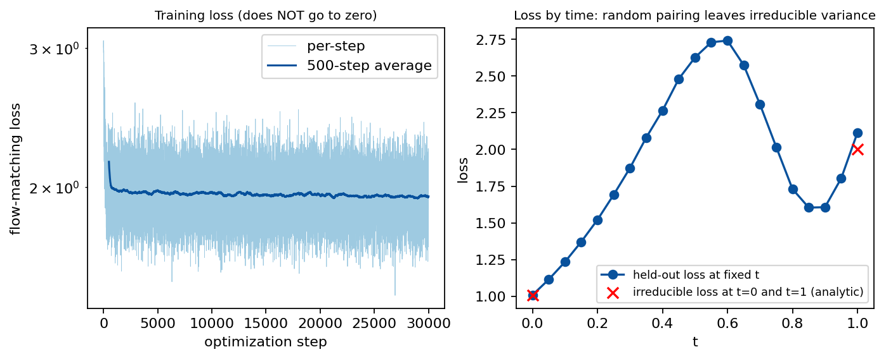
What is being predicted. The network sees only (xt, t). Many different pairs (x0, x1) have straight paths through the same point at the same time, and each carries a different u. The squared-error minimizer is therefore the conditional mean E[x1 − x0 | xt, t]: the average velocity of all training paths passing through that point. At generation time there is no endpoint to supply, and this averaged velocity field is what moves the samples.
Why the loss does not go to zero. What remains is the variance of u around its conditional mean. It is known exactly at the ends: at t = 0 the point is x0, independent of x1, so the floor is tr Cov(x1) = 1.005; at t = 1 the point is x1 and the floor is E‖x0‖2 = 2.0. Between them the loss stays high: the final training loss is 1.949, plateauing rather than approaching 0. A flat loss is not a sign of failure; the sample quality below is the real test.
Forward Euler, zk+1 = zk + Δt vθ(zk, tk), with 120 steps, starting from fresh Gaussian samples (no endpoints supplied). Generated points vs. independent target samples on a fixed 40×40 histogram grid: TV = 0.087, against 0.079 for two independent sets of true target samples, so the ring is reproduced to within sampling noise.
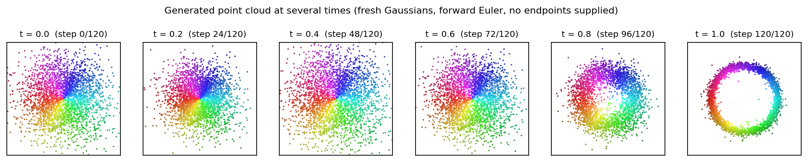
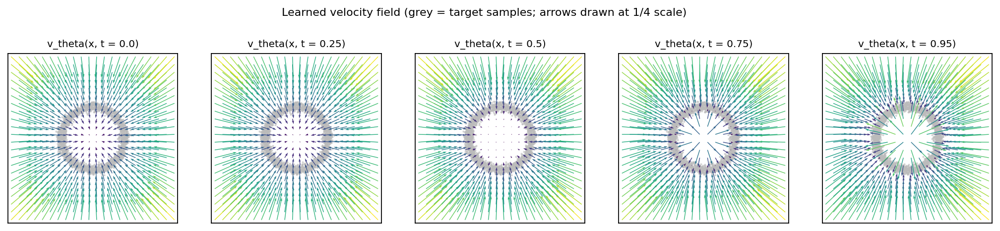
Learned sampling trajectories are not the straight training paths. Training segments are exactly straight, but they cross each other, and the field is the average over crossing segments; integrating an averaged field produces curved paths. Measured on 3,000 trajectories, the mean of (path length − start-to-end distance) is 0.363 (median 0.372), whereas it is exactly 0 for a training path. So straight training paths do not guarantee straight sampling trajectories.
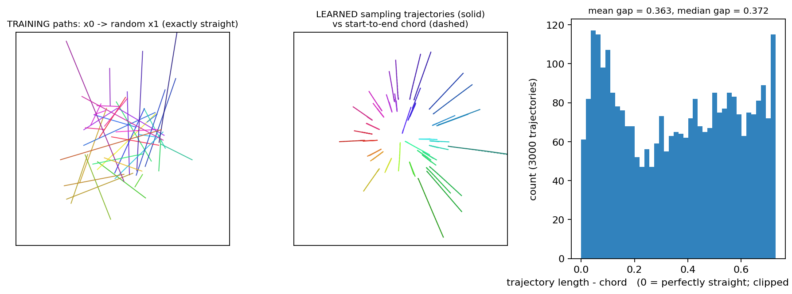
Target: the text "FM". Sampling rule: the text is rasterized (Pillow, DejaVu Sans Bold) into a 512×512 binary mask covering [-1.2, 1.2]2, giving 46,735 foreground pixels. A sample is made by choosing a foreground pixel uniformly at random and adding uniform jitter inside that pixel, so the samples form a continuous density that is uniform over the letter strokes (pixel size 0.0047 data units). Coordinates are used as they are, with no further scaling. The model, loss and training recipe are the same as in Part 1.
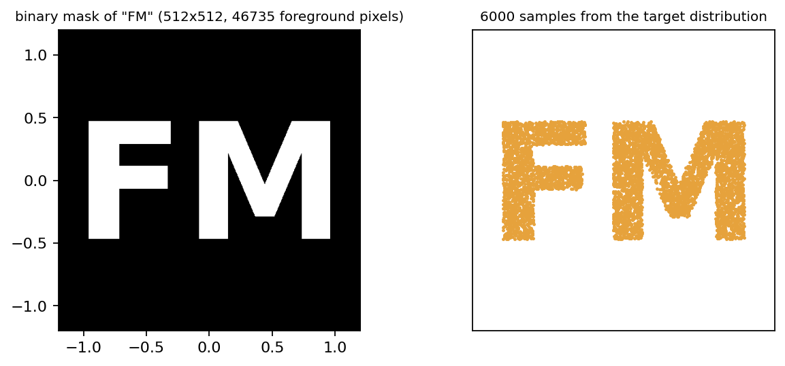
The animation shows 3,000 particles integrated with the trained model (120 Euler steps), so each frame is an actual learned trajectory point, not an interpolation along a known straight path. The same particles are tracked through all frames.
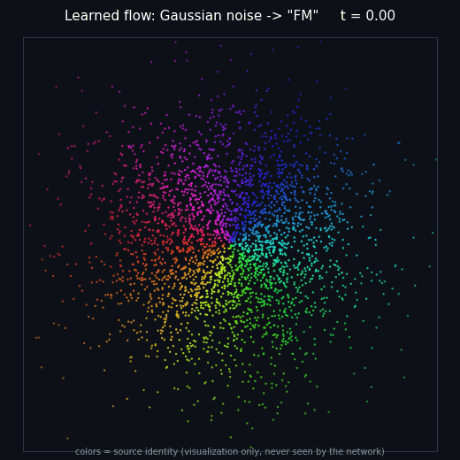
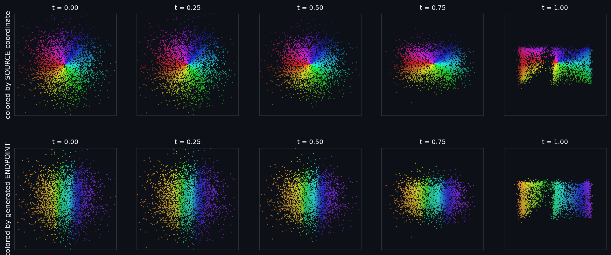
How colors are assigned, and whether they are trained. Colors are a visualization attribute only and never enter training or sampling: the network outputs only 2D velocities. In the top row the hue of each particle is the angle of its source point x0 and its brightness decreases with the radius of x0; the color is attached to the particle index, so it stays with the particle for the whole trajectory. In the bottom row the color is chosen from the particle's generated endpoint (hue from x, brightness from y) and is then carried backwards along its path. The animation zooms in smoothly (axis limits shrink from ±3.2 to ±1.35) so that the noise and the letters both fit, which changes the apparent speed of the points.
Fixed trained weights and a fixed set of 20,000 held-out Gaussian starts; only the number of Euler steps changes. Network evaluations (NFE) equal the number of steps. Time is the sampling loop for 20,000 points on CPU, excluding any rendering (measured on seed 0). Quality is measured against 20,000 independent target samples with distribution-level metrics only:
| Euler steps (= NFE) | time (s) | TV | SW1 | stray fraction | dist. to 400-step result |
|---|---|---|---|---|---|
| 1 | 0.009 | 0.958 ± 0.003 | 0.3702 ± 0.0018 | 0.000 ± 0.000 | 0.6140 ± 0.0059 |
| 2 | 0.013 | 0.785 ± 0.004 | 0.2287 ± 0.0012 | 0.156 ± 0.006 | 0.3628 ± 0.0025 |
| 5 | 0.037 | 0.429 ± 0.001 | 0.0895 ± 0.0006 | 0.119 ± 0.003 | 0.1420 ± 0.0011 |
| 10 | 0.081 | 0.298 ± 0.002 | 0.0455 ± 0.0002 | 0.096 ± 0.003 | 0.0698 ± 0.0007 |
| 25 | 0.200 | 0.237 ± 0.002 | 0.0202 ± 0.0001 | 0.084 ± 0.002 | 0.0267 ± 0.0003 |
| 50 | 0.403 | 0.227 ± 0.004 | 0.0136 ± 0.0002 | 0.081 ± 0.002 | 0.0125 ± 0.0001 |
| 100 | 0.796 | 0.223 ± 0.004 | 0.0113 ± 0.0005 | 0.081 ± 0.003 | 0.0053 ± 0.0000 |
| 200 | 1.723 | 0.221 ± 0.005 | 0.0106 ± 0.0006 | 0.081 ± 0.003 | 0.0018 ± 0.0000 |
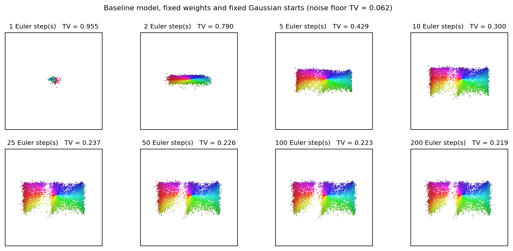
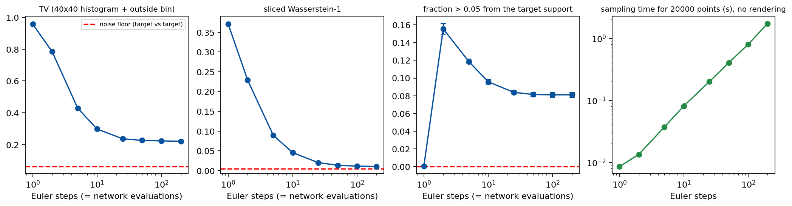
What changes with fewer steps. Time grows linearly with the number of steps (0.009 s for 1 step to 1.72 s for 200). One Euler step from t = 0 moves every point by vθ(z0, 0), which is the average velocity toward the data mean, so all samples collapse near one place (TV 0.96). That also explains why the stray fraction is misleading at 1 step: the collapsed blob can happen to sit on a stroke, so TV and SW1 are the metrics to trust there. With 2 to 10 steps the cloud grows toward the letters but is blurred; the distance to the converged solution shrinks roughly in proportion to 1/N, as expected for a first-order method.
What does not improve with more steps. From about 25 to 50 steps onward TV levels off near 0.22, well above the noise floor of 0.062, and about 8% of points still lie off the letters, although the distance to the converged solution keeps falling to 0.0018. So the remaining error is not numerical: the Euler solution is converging, but to the solution of an imperfect learned field. Plausible sources are the model (a 33,794-parameter MLP and limited training must represent sharp stroke edges and the gap between the letters, where a few points lie in between) and the target representation (the pixel mask with jitter has discontinuous edges, so the density to match is itself hard to approximate). I did not separate these two sources experimentally, and more steps would not fix either.
Dataset. I froze the trained baseline and drew 100,000 Gaussian sources. Each was integrated with 200 Euler steps, and I saved each source together with its own endpoint. The pairs were never reshuffled and the target shape was not used directly. Generating the dataset took 8.3 s (20,000,000 network evaluations).
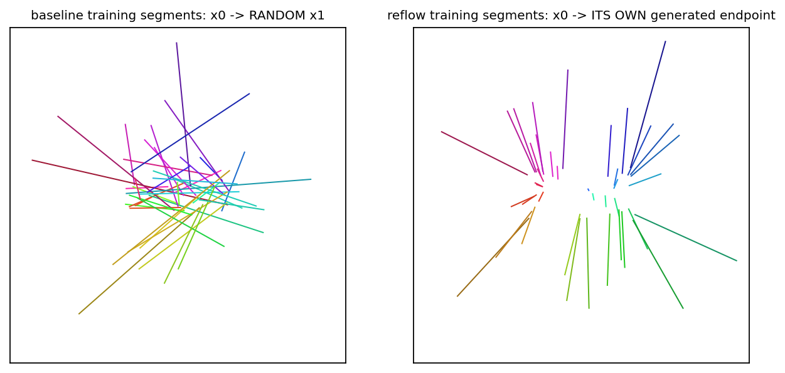
The reflow model has the same architecture, is initialized from the baseline weights, and is trained on straight interpolations between the saved pairs (10,000 steps, lr 5e-4 with cosine decay, 19.1 s). Models are compared on the same held-out Gaussian starts and the same step counts. Two compute-matched controls continue training the baseline with the ordinary loss: one for the same number of optimizer steps (10,000), and one for the same wall-clock as reflow training plus dataset generation (14,394 steps). Results are mean ± std over 3 seeds ([0, 1, 2]); a seed changes initialization, minibatches and the reflow dataset, but not the target.
| Euler steps | baseline | reflow | baseline + continued (same #steps) | baseline + continued (same wall-clock) |
|---|---|---|---|---|
| 1 | 0.958 ± 0.003 | 0.263 ± 0.011 | 0.962 ± 0.002 | 0.962 ± 0.003 |
| 2 | 0.785 ± 0.004 | 0.240 ± 0.009 | 0.785 ± 0.001 | 0.785 ± 0.003 |
| 5 | 0.429 ± 0.001 | 0.232 ± 0.005 | 0.424 ± 0.005 | 0.421 ± 0.004 |
| 10 | 0.298 ± 0.002 | 0.226 ± 0.005 | 0.290 ± 0.003 | 0.290 ± 0.001 |
| 25 | 0.237 ± 0.002 | 0.228 ± 0.005 | 0.228 ± 0.004 | 0.225 ± 0.004 |
| 50 | 0.227 ± 0.004 | 0.227 ± 0.004 | 0.216 ± 0.005 | 0.214 ± 0.004 |
| 100 | 0.223 ± 0.004 | 0.227 ± 0.004 | 0.213 ± 0.006 | 0.210 ± 0.005 |
| 200 | 0.221 ± 0.005 | 0.227 ± 0.004 | 0.213 ± 0.006 | 0.208 ± 0.004 |
| Euler steps | baseline | reflow | baseline + continued (same #steps) | baseline + continued (same wall-clock) |
|---|---|---|---|---|
| 1 | 0.3702 ± 0.0018 | 0.0113 ± 0.0007 | 0.3708 ± 0.0013 | 0.3714 ± 0.0004 |
| 2 | 0.2287 ± 0.0012 | 0.0108 ± 0.0006 | 0.2282 ± 0.0010 | 0.2276 ± 0.0004 |
| 5 | 0.0895 ± 0.0006 | 0.0107 ± 0.0005 | 0.0892 ± 0.0007 | 0.0897 ± 0.0006 |
| 10 | 0.0455 ± 0.0002 | 0.0106 ± 0.0005 | 0.0449 ± 0.0002 | 0.0453 ± 0.0001 |
| 25 | 0.0202 ± 0.0001 | 0.0106 ± 0.0006 | 0.0195 ± 0.0001 | 0.0197 ± 0.0002 |
| 50 | 0.0136 ± 0.0002 | 0.0106 ± 0.0006 | 0.0127 ± 0.0002 | 0.0128 ± 0.0004 |
| 100 | 0.0113 ± 0.0005 | 0.0106 ± 0.0006 | 0.0103 ± 0.0002 | 0.0103 ± 0.0005 |
| 200 | 0.0106 ± 0.0006 | 0.0106 ± 0.0006 | 0.0095 ± 0.0003 | 0.0094 ± 0.0005 |
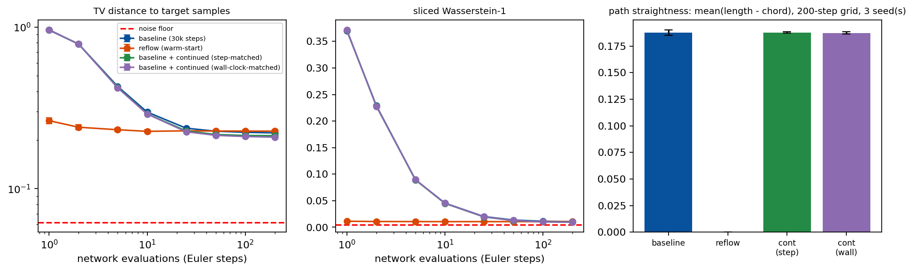
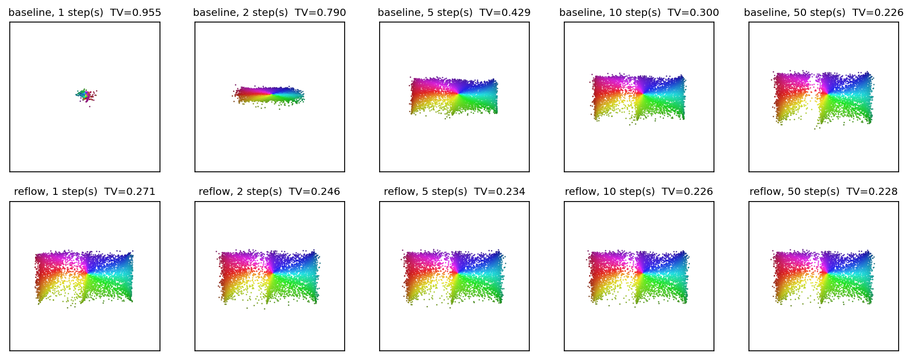
| model | mean(length − chord) | mean(length / chord) | S = mean ‖v − (zend − zstart)‖2 |
|---|---|---|---|
| baseline | 0.1874 ± 0.0025 | 1.6181 ± 0.0191 | 0.3825 ± 0.0038 |
| reflow | 0.0001 ± 0.0000 | 1.0007 ± 0.0002 | 0.0002 ± 0.0000 |
| baseline + continued (same #steps) | 0.1878 ± 0.0008 | 1.6254 ± 0.0149 | 0.3827 ± 0.0004 |
| baseline + continued (same wall-clock) | 0.1874 ± 0.0009 | 1.6180 ± 0.0045 | 0.3828 ± 0.0025 |
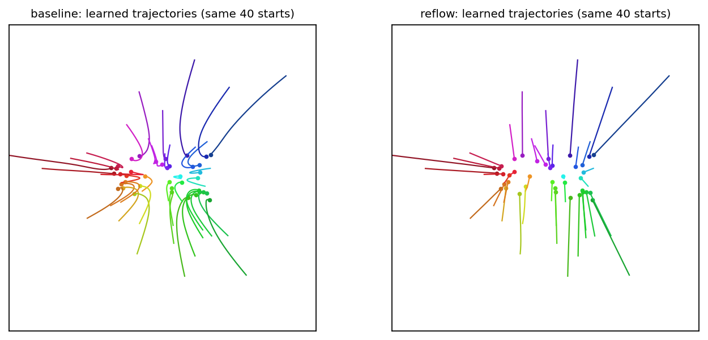
| item | steps / evaluations | wall time (s), seed 0 |
|---|---|---|
| baseline training | 30,000 optimizer steps | 56.6 |
| reflow dataset generation | 100,000 × 200 network evaluations | 8.3 |
| reflow training | 10,000 optimizer steps | 19.1 |
| continued baseline (same steps) | 10,000 optimizer steps | 18.7 |
| continued baseline (same wall-clock) | 14,394 optimizer steps | 27.4 |
Extra cost of reflow: 27.4 s (8.3 s data + 19.1 s training), about 48% of baseline training. This is reported separately from inference cost, which is the same for every model: each Euler step is one forward pass of the same network (e.g. 0.081 s vs 0.086 s for 10 steps).
Alternative explanations and limits.
Generative AI tools were used to help write and debug the code; I ran all experiments and take responsibility for the results and analysis.